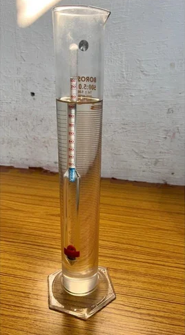

Hydrometer Test

Apparatus:
1. Hydrometer
2. Glass measuring cylinder (jar), 1000ml
3. Rubber bung forthe cylinder (jar)
4. Mechanical stirrer
5.Weighing balance, accuracy 0.01g
6.Oven
7. Deflocculating agent.
8. Desiccator
9. Evaporating dish
10. Conical flask or beaker, 1000ml
11.Stop watch
12. Wash bottle
13. Thermometer
14. Water bath
15. 75 µ Sieve
16.Scale